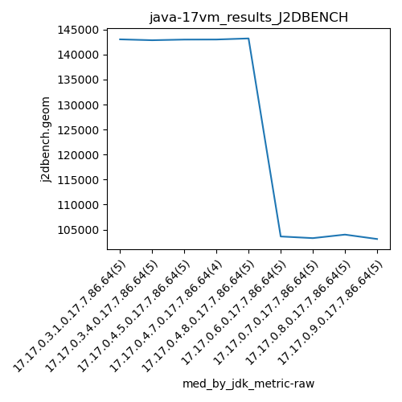

java-17 J2DBENCH
Context at bottom
/home/jvanek/git/benchmarks-in-nested-virtualisation-toolchain/final_results/vm_results/vm_results_RADARGUNs1
java-17
J2DBENCH
/home/jvanek/git/benchmarks-in-nested-virtualisation-toolchain/final_results/vm_results/vm_results_RADARGUNs3
java-17
J2DBENCH
/home/jvanek/git/benchmarks-in-nested-virtualisation-toolchain/final_results/vm_results/vm_results_DACAPO
java-17
J2DBENCH
/home/jvanek/git/benchmarks-in-nested-virtualisation-toolchain/final_results/vm_results/vm_results_J2DBENCH
java-17
J2DBENCH
vm_results_J2DBENCH
final score
Expected number of java-17 JDKs: 9
1st avgmed_alljdks_metric:
/home/jvanek/git/benchmarks-in-nested-virtualisation-toolchain/final_results/result_processing.py /home/jvanek/git/benchmarks-in-nested-virtualisation-toolchain/final_results/vm_results/vm_results_J2DBENCH j2dbench.geom False
values: [142776, 143433, 143037, 142887, 143349, 142588, 143396, 142972, 142673, 142863, 143011, 142947, 142790, 143241, 142993, 142926, 143005, 143157, 142982, 142865, 143219, 142736, 143226, 143256, 103873, 102637, 103177, 103616, 103655, 103176, 102995, 103283, 103661, 104022, 103988, 102245, 103980, 104031, 104213, 103704, 102290, 102419, 103108, 104104]

Expected number of iterations: 5
final number of values: 44 out of 45
Pass rate: 97.8%
values: (102245, 143433, 125011.47727272728, 142736)

** accuracy from all jdks and runs
more is better
MIN: 102245
MAX: 143433
AVG: 125011.47727272728
MED: 142736
Relative differences 1:
MIN-MAX: 29.0 %
MIN-AVG: 18.0 %
MIN-MED: 28.0 %
MAX-MIN: -40.0 %
MAX-AVG: -15.0 %
MAX-MED: -0.0 %
AVG-MED: 12.0 %
stored to java-17.properties. sort | uniq that!
2nd avgmed_by_jdk_metric:
values: [143096.4, 142898.4, 142996.4, 143017.5, 143060.4, 103391.6, 103427.4, 103691.4, 103125.0]

values: [143037, 142863, 142993, 143005, 143219, 103616, 103283, 103988, 103108]

values: (103125.0, 143096.4, 125411.61111111111, 142898.4)
values: (103108, 143219, 125456.88888888889, 142863)

** accuracy from all jdks where runs were avged
more is better
MIN: 103125.0
MAX: 143096.4
AVG: 125411.61111111111
MED: 142898.4
Relative differences 1:
MIN-MAX: 28.0 %
MIN-AVG: 18.0 %
MIN-MED: 28.0 %
MAX-MIN: -39.0 %
MAX-AVG: -14.0 %
MAX-MED: -0.0 %
AVG-MED: 12.0 %
stored to java-17.properties. sort | uniq that!
** accuracy from all jdks where runs were medianed
more is better
MIN: 103108
MAX: 143219
AVG: 125456.88888888889
MED: 142863
Relative differences 1:
MIN-MAX: 28.0 %
MIN-AVG: 18.0 %
MIN-MED: 28.0 %
MAX-MIN: -39.0 %
MAX-AVG: -14.0 %
MAX-MED: -0.0 %
AVG-MED: 12.0 %
stored to java-17.properties. sort | uniq that!
/home/jvanek/git/benchmarks-in-nested-virtualisation-toolchain/final_results/vm_results/vm_results_SPECJBB
java-17
J2DBENCH
/home/jvanek/git/benchmarks-in-nested-virtualisation-toolchain/final_results/vm_results/vm_results_JMH
java-17
J2DBENCH
pass rates:
vm_results_J2DBENCH=97.8%
Context:
- vm_results
- J2DBENCH